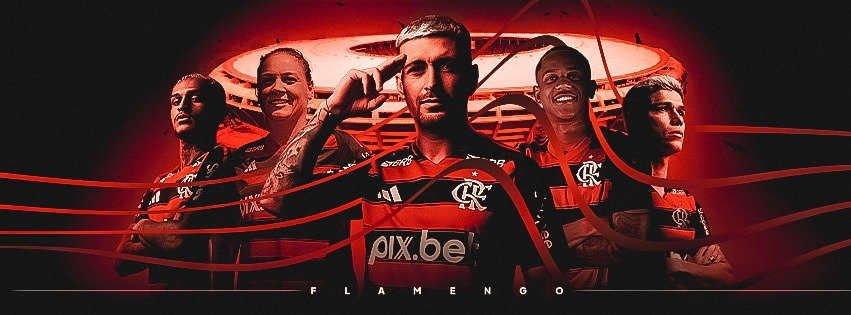

Clube de regatas Flamengo
Um dos maiores clubes do mundo

O início
Clube de Regatas do Flamengo (mais conhecido simplesmente como Flamengo, popularmente pelos apelidos de Fla, Mengo e Mengão, e cujo acrônimo é CRF) é uma agremiação poliesportiva brasileira com sede na cidade do Rio de Janeiro, capital do estado homônimo. Fundado no bairro do Flamengo para disputas do esporte remo em 17 de novembro de 1895,tornou-se um dos clubes mais bem-sucedidos e populares do esporte brasileiro especialmente pelo futebol.
É considerado um dos maiores e mais tradicionais clubes do Brasil e da América do Sul. Tem como suas cores tradicionais o vermelho e o preto e como seus maiores rivais esportivos o Vasco da Gama, o Fluminense e o Botafogo.
História
O Flamengo é um dos clubes mais vitoriosos do Brasil, com uma rica história que inclui títulos nacionais e internacionais. Desde sua fundação, o clube tem sido um símbolo de paixão e dedicação no esporte brasileiro.
O clube é conhecido por sua torcida apaixonada, que apoia o time em todos os momentos, tornando o Flamengo um verdadeiro fenômeno no cenário esportivo.
Conquistas
Dentre seus maiores títulos no futebol, destacam-se as conquistas da Copa Intercontinental (único time carioca a ter conquistado um título de dimensão mundial reconhecido pela FIFA) e das Copas Libertadores da América de 1981, 2019 e 2022 (único time carioca a ter conquistado por três vezes a competição, e um dos sete do Brasil a tê-la conquistado mais de uma vez), além de uma Recopa Sul-Americana, uma Copa Mercosul e uma Copa de Ouro Nicolás Leoz, o que lhe confere a quarta posição no ranking de títulos internacionais de clubes brasileiros.
Flamengo: não precisa explicar, só precisa sentir!
Pensador
Curiosidades
- O Flamengo é o clube com mais torcedores no Brasil, com cerca de 40 milhões de fãs.
- O mascote do Flamengo é o Urubu, que simboliza a força e a garra do time.
- O estádio do Flamengo é o Maracanã, um dos maiores e mais icônicos estádios do mundo.
- O Flamengo já conquistou mais de 30 títulos estaduais do Campeonato Carioca.
- O clube tem uma rivalidade histórica com o Vasco da Gama, conhecida como "Clássico dos Milhões".
O Flamengo é mais que um clube,
é uma paixão que não se explica, se sente!

Mais Informações:
Você pode encontrar mais informações clicando aqui